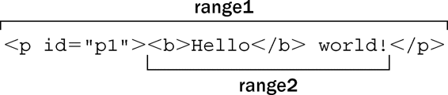
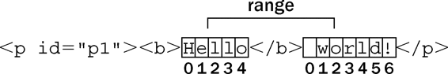
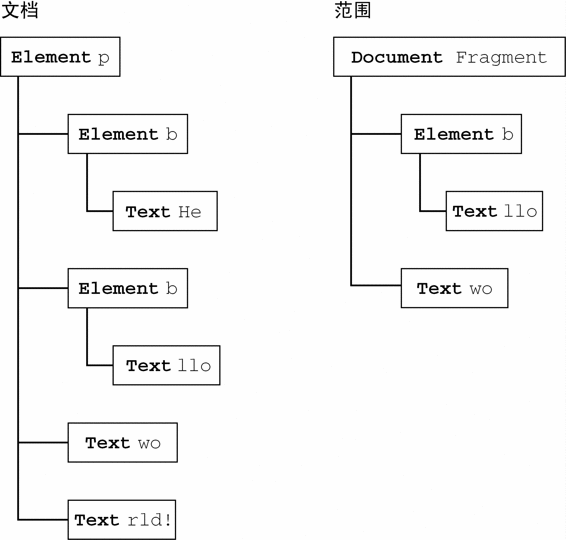
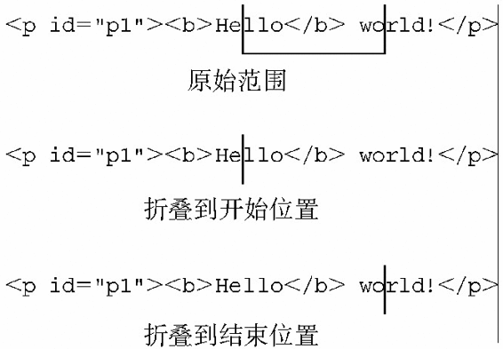
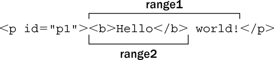

为了让开发人员更方便地控制页面，“DOM2级遍历和范围”模块定义了“范围”（range）接口。通过范围可以选择文档中的一个区域，而不必考虑节点的界限（选择在后台完成，对用户是不可见的）。在常规的DOM操作不能更有效地修改文档时，使用范围往往可以达到目的。Firefox、Opera、Safari和Chrome都支持DOM范围。IE以专有方式实现了自己的范围特性。
DOM2级在Document类型中定义了createRange()方法。在兼容DOM的浏览器中，这个方法属于document对象。使用hasFeature()或者直接检测该方法，都可以确定浏览器是否支持范围。
var supportsRange = document.implementation.hasFeature("Range", "2.0");
var alsoSupportsRange = (typeof document.createRange == "function");
如果浏览器支持范围，那么就可以使用createRange()来创建DOM范围，如下所示：
var range = document.createRange();
与节点类似，新创建的范围也直接与创建它的文档关联在一起，不能用于其他文档。创建了范围之后，接下来就可以使用它在后台选择文档中的特定部分。而创建范围并设置了其位置之后，还可以针对范围的内容执行很多种操作，从而实现对底层DOM树的更精细的控制。
每个范围由一个Range类型的实例表示，这个实例拥有很多属性和方法。下列属性提供了当前范围在文档中的位置信息。
startContainer：包含范围起点的节点（即选区中第一个节点的父节点）。
startOffset：范围在startContainer中起点的偏移量。如果startContainer是文本节点、注释节点或CDATA节点，那么startOffset就是范围起点之前跳过的字符数量。否则，startOffset就是范围中第一个子节点的索引。
endContainer：包含范围终点的节点（即选区中最后一个节点的父节点）。
endOffset：范围在endContainer中终点的偏移量（与startOffset遵循相同的取值规则）。
commonAncestorContainer：startContainer和endContainer共同的祖先节点在文档树中位置最深的那个。
在把范围放到文档中特定的位置时，这些属性都会被赋值。
1. 用DOM范围实现简单选择
要使用范围来选择文档中的一部分，最简的方式就是使用selectNode()或selectNodeContents()。这两个方法都接受一个参数，即一个DOM节点，然后使用该节点中的信息来填充范围。其中，selectNode()方法选择整个节点，包括其子节点；而selectNodeContents()方法则只选择节点的子节点。以下面的HTML代码为例。
<!DOCTYPE html>
<html>
<body>
<p id="p1"><b>Hello</b> world!</p>
</body>
</html>
我们可以使用下列代码来创建范围：
var range1 = document.createRange();
range2 = document.createRange();
p1 = document.getElementById("p1");
range1.selectNode(p1);
range2.selectNodeContents(p1);
DOMRangeExample.htm
这里创建的两个范围包含文档中不同的部分：rang1包含<p/>元素及其所有子元素，而rang2包含<b/>元素、文本节点"Hello"和文本节点"world!"（如图12-6所示）。

图 12-6
在调用selectNode()时，startContainer、endContainer和commonAncestorContainer都等于传入节点的父节点，也就是这个例子中的document.body。而startOffset属性等于给定节点在其父节点的childNodes集合中的索引（在这个例子中是1——因为兼容DOM的浏览器将空格算作一个文本节点），endOffset等于startOffset加1（因为只选择了一个节点）。
在调用selectNodeContents()时，startContainer、endContainer和commonAncestorContainer等于传入的节点，即这个例子中的<p>元素。而startOffset属性始终等于0，因为范围从给定节点的第一个子节点开始。最后，endOffset等于子节点的数量（node.childNodes.length），在这个例子中是2。
此外，为了更精细地控制将哪些节点包含在范围中，还可以使用下列方法。
setStartBefore(refNode)：将范围的起点设置在refNode之前，因此refNode也就是范围选区中的第一个子节点。同时会将startContainer属性设置为refNode.parentNode，将startOffset属性设置为refNode在其父节点的childNodes集合中的索引。
setStartAfter(refNode)：将范围的起点设置在refNode之后，因此refNode也就不在范围之内了，其下一个同辈节点才是范围选区中的第一个子节点。同时会将startContainer属性设置为refNode.parentNode，将startOffset属性设置为refNode在其父节点的childNodes集合中的索引加1。
setEndBefore(refNode)：将范围的终点设置在refNode之前，因此refNode也就不在范围之内了，其上一个同辈节点才是范围选区中的最后一个子节点。同时会将endContainer属性设置为refNode.parentNode，将endOffset属性设置为refNode在其父节点的childNodes集合中的索引。
setEndAfter(refNode)：将范围的终点设置在refNode之后，因此refNode也就是范围选区中的最后一个子节点。同时会将endContainer属性设置为refNode.parentNode，将endOffset属性设置为refNode在其父节点的childNodes集合中的索引加1。
在调用这些方法时，所有属性都会自动为你设置好。不过，要想创建复杂的范围选区，也可以直接指定这些属性的值。
2. 用DOM范围实现复杂选择
要创建复杂的范围就得使用setStart()和setEnd()方法。这两个方法都接受两个参数：一个参照节点和一个偏移量值。对setStart()来说，参照节点会变成startContainer，而偏移量值会变成startOffset。对于setEnd()来说，参照节点会变成endContainer，而偏移量值会变成endOffset。
可以使用这两个方法来模仿selectNode()和selectNodeContents()。来看下面的例子：
var range1 = document.createRange();
range2 = document.createRange();
p1 = document.getElementById("p1");
p1Index = -1;
i, len;
for (i=0, len=p1.parentNode.childNodes.length; i < len; i++) {
if (p1.parentNode.childNodes[i] == p1) {
p1Index = i;
break;
}
}
range1.setStart(p1.parentNode, p1Index);
range1.setEnd(p1.parentNode, p1Index + 1);
range2.setStart(p1, 0);
range2.setEnd(p1, p1.childNodes.length);
DOMRangeExample2.htm
显然，要选择这个节点（使用range1），就必须确定当前节点（p1）在其父节点的childNodes集合中的索引。而要选择这个节点的内容（使用range2），也不必计算什么；只要通过setStart()和setEnd()设置默认值即可。模仿selectNode()和selectNodeContents()并不是setStart()和setEnd()的主要用途，它们更胜一筹的地方在于能够选择节点的一部分。
假设你只想选择前面HTML示例代码中从"Hello"的"llo"到"world!"的"o"——很容易做到。第一步是取得所有节点的引用，如下面的例子所示：
var p1 = document.getElementById("p1");
helloNode = p1.firstChild.firstChild;
worldNode = p1.lastChild;
DOMRangeExample3.htm
实际上，"Hello"文本节点是<p>元素的孙子节点，因为它本身是<b>元素的一个子节点。因此，p1.firstChild取得的是<b>，而p1.firstChild.firstChild取得的才是这个文本节点。"world!"文本节点是<p>元素的第二个子节点（也是最后一个子节点），因此可以使用p1.lastChild取得该节点。然后，必须在创建范围时指定相应的起点和终点，如下面的例子所示。
var range = document.createRange();
range.setStart(helloNode, 2);
range.setEnd(worldNode, 3);
DOMRangeExample3.htm
因为这个范围的选区应该从"Hello"中"e"的后面开始，所以在setStart()中传入helloNode的同时，传入了偏移量2（即"e"的下一个位置；"H"的位置是0）。设置选区的终点时，在setEnd()中传入worldNode的同时传入了偏移量3，表示选区之外的第一个字符的位置，这个字符是"r"，它的位置是3（位置0上还有一个空格）。如图12-7所示。

图 12-7
由于helloNode和worldNode都是文本节点，因此它们分别变成了新建范围的startContainer和endContainer。此时startOffset和endOffset分别用以确定两个节点所包含的文本中的位置，而不是用以确定子节点的位置（就像传入的参数为元素节点时那样）。此时的commonAncestorContainer是<p>元素，也就是同时包含这两个节点的第一个祖先元素。
当然，仅仅是选择了文档中的某一部分用处并不大。但重要的是，选择之后才可以对选区进行操作。
3. 操作DOM范围中的内容
在创建范围时 ，内部会为这个范围创建一个文档片段，范围所属的全部节点都被添加到了这个文档片段中。为了创建这个文档片段，范围内容的格式必须正确有效。在前面的例子中，我们创建的选区分别开始和结束于两个文本节点的内部，因此不能算是格式良好的DOM结构，也就无法通过DOM来表示。但是，范围知道自身缺少哪些开标签和闭标签，它能够重新构建有效的DOM结构以便我们对其进行操作。
对于前面的例子而言，范围经过计算知道选区中缺少一个开始的<b>标签，因此就会在后台动态加入一个该标签，同时还会在前面加入一个表示结束的</b>标签以结束"He"。于是，修改后的DOM就变成了如下所示。
<p><b>He</b><b>llo</b> world!</p>
另外，文本节点"world!"也被拆分为两个文本节点，一个包含"wo"，另一个包含"rld!"。最终的DOM树如图12-8所示，右侧是表示范围的文档片段的内容。
像这样创建了范围之后，就可以使用各种方法对范围的内容进行操作了（注意，表示范围的内部文档片段中的所有节点，都只是指向文档中相应节点的指针）。
第一个方法，也是最容易理解的方法，就是deleteContents()。这个方法能够从文档中删除范围所包含的内容。例如：
var p1 = document.getElementById("p1");
helloNode = p1.firstChild.firstChild;
worldNode = p1.lastChild;
range = document.createRange();
range.setStart(helloNode, 2);
range.setEnd(worldNode, 3);
range.deleteContents();
DOMRangeExample4.htm

图 12-8
执行以上代码后，页面中会显示如下HTML代码：
<p><b>He</b>rld!</p>
由于范围选区在修改底层DOM结构时能够保证格式良好，因此即使内容被删除了，最终的DOM结构依旧是格式良好的。
与deleteContents()方法相似，extractContents()也会从文档中移除范围选区。但这两个方法的区别在于，extractContents()会返回范围的文档片段。利用这个返回的值，可以将范围的内容插入到文档中的其他地方。如下面的例子所示：
var p1 = document.getElementById("p1");
helloNode = p1.firstChild.firstChild;
worldNode = p1.lastChild;
range = document.createRange();
range.setStart(helloNode, 2);
range.setEnd(worldNode, 3);
var fragment = range.extractContents();
p1.parentNode.appendChild(fragment);
DOMRangeExample5.htm
在这个例子中，我们将提取出来的文档片段添加到了文档<body>元素的末尾。（记住，在将文档片段传入appendChild()方法中时，添加到文档中的只是片段的子节点，而非片段本身。）结果得到如下HTML代码：
<p><b>He</b>rld!</p>
<b>llo</b> wo
还一种做法，即使用cloneContents()创建范围对象的一个副本，然后在文档的其他地方插入该副本。如下面的例子所示：
var p1 = document.getElementById("p1"),
helloNode = p1.firstChild.firstChild,
worldNode = p1.lastChild,
range = document.createRange();
range.setStart(helloNode, 2);
range.setEnd(worldNode, 3);
var fragment = range.cloneContents();
p1.parentNode.appendChild(fragment);
DOMRangeExample6.htm
这个方法与extractContents()非常类似，因为它们都返回文档片段。它们的主要区别在于，cloneContents()返回的文档片段包含的是范围中节点的副本，而不是实际的节点。执行上面的操作后，页面中的HTML代码应该如下所示：
<p><b>Hello</b> world!</p>
<b>llo</b> wo
有一点请读者注意，那就是在调用上面介绍的方法之前，拆分的节点并不会产生格式良好的文档片段。换句话说，原始的HTML在DOM被修改之前会始终保持不变。
4. 插入DOM范围中的内容
利用范围，可以删除或复制内容，还可以像前面介绍的那样操作范围中的内容。使用insertNode()方法可以向范围选区的开始处插入一个节点。假设我们想在前面例子中的HTML前面插入以下HTML代码：
<span style="color: red">Inserted text</span>
那么，就可以使用下列代码：
var p1 = document.getElementById("p1");
helloNode = p1.firstChild.firstChild;
worldNode = p1.lastChild;
range = document.createRange();
range.setStart(helloNode, 2);
range.setEnd(worldNode, 3);
var span = document.createElement("span");
span.style.color = "red";
span.appendChild(document.createTextNode("Inserted text"));
range.insertNode(span);
DOMRangeExample7.htm
运行以上JavaScript代码，就会得到如下HTML代码：
<p id="p1"><b>He<span style="color: red">Inserted text</span>llo</b> world</p>
注意，<span>正好被插入到了"Hello"中的"llo"前面，而该位置就是范围选区的开始位置。还要注意的是，由于这里没有使用上一节介绍的方法，结果原始的HTML并没有添加或删除<b>元素。使用这种技术可以插入一些帮助提示信息，例如在打开新窗口的链接旁边插入一幅图像。
除了向范围内部插入内容之外，还可以环绕范围插入内容，此时就要使用surroundContents()方法。这个方法接受一个参数，即环绕范围内容的节点。在环绕范围插入内容时，后台会执行下列步骤。
提取出范围中的内容（类似执行extractContent()）；
将给定节点插入到文档中原来范围所在的位置上；
将文档片段的内容添加到给定节点中。
可以使用这种技术来突出显示网页中的某些词句，例如下列代码：
var p1 = document.getElementById("p1");
helloNode = p1.firstChild.firstChild;
worldNode = p1.lastChild;
range = document.createRange();
range.selectNode(helloNode);
var span = document.createElement("span");
span.style.backgroundColor = "yellow";
range.surroundContents(span);
DOMRangeExample8.htm
会给范围选区加上一个黄色的背景。得到的HTML代码如下所示：
<p><b>He</b><span style="background-color:yellow"><b>llo</b> wo</span>rld!</p>
为了插入<span>，必须将<b>元素拆分成两个<b>元素，一个包含"He"，另一个包含"llo"。拆分之后，就可以稳妥地插入<span>了。
5. 折叠DOM范围
所谓折叠范围，就是指范围中未选择文档的任何部分。可以用文本框来描述折叠范围的过程。假设文本框中有一行文本，你用鼠标选择了其中一个完整的单词。然后，你单击鼠标左键，选区消失，而光标则落在了其中两个字母之间。同样，在折叠范围时，其位置会落在文档中的两个部分之间，可能是范围选区的开始位置，也可能是结束位置。图12-9展示了折叠范围时发生的情形。
使用collapse()方法来折叠范围，这个方法接受一个参数，一个布尔值，表示要折叠到范围的哪一端。参数true表示折叠到范围的起点，参数false表示折叠到范围的终点。要确定范围已经折叠完毕，可以检查collapsed属性，如下所示：
range.collapse(true); //折叠到起点
alert(range.collapsed); //输出true

图 12-9
检测某个范围是否处于折叠状态，可以帮我们确定范围中的两个节点是否紧密相邻。例如，对于下面的HTML代码：
<p id="p1">Paragraph 1</p><p id="p2">Paragraph 2</p>
如果我们不知道其实际构成（比如说，这行代码是动态生成的），那么可以像下面这样创建一个范围。
var p1 = document.getElementById("p1"),
p2 = document.getElementById("p2"),
range = document.createRange();
range.setStartAfter(p1);
range.setStartBefore(p2);
alert(range.collapsed); //输出true
在这个例子中，新创建的范围是折叠的，因为p1的后面和p2的前面什么也没有。
6. 比较DOM范围
在有多个范围的情况下，可以使用compareBoundaryPoints()方法来确定这些范围是否有公共的边界（起点或终点）。这个方法接受两个参数：表示比较方式的常量值和要比较的范围。表示比较方式的常量值如下所示。
Range.START_TO_START(0)：比较第一个范围和第二个范围的起点；
Range.START_TO_END(1)：比较第一个范围的起点和第二个范围的终点；
Range.END_TO_END(2)：比较第一个范围和第二个范围的终点；
Range.END_TO_START(3)：比较第一个范围的终点和第一个范围的起点。
compareBoundaryPoints()方法可能的返回值如下：如果第一个范围中的点位于第二个范围中的点之前，返回-1；如果两个点相等，返回0；如果第一个范围中的点位于第二个范围中的点之后，返回1。来看下面的例子。
var range1 = document.createRange();
var range2 = document.createRange();
var p1 = document.getElementById("p1");
range1.selectNodeContents(p1);
range2.selectNodeContents(p1);
range2.setEndBefore(p1.lastChild);
alert(range1.compareBoundaryPoints(Range.START_TO_START, range2)); //0
alert(range1.compareBoundaryPoints(Range.END_TO_END, range2)); //1
DOMRangeExample9.htm
在这个例子中，两个范围的起点实际上是相同的，因为它们的起点都是由selectNodeContents()方法设置的默认值来指定的。因此，第一次比较返回0。但是，range2的终点由于调用setEndBefore()已经改变了，结果是range1的终点位于range2的终点后面（见图12-10），因此第二次比较返回1。

图 12-10
7. 复制DOM范围
可以使用cloneRange()方法复制范围。这个方法会创建调用它的范围的一个副本。
var newRange = range.cloneRange();
新创建的范围与原来的范围包含相同的属性，而修改它的端点不会影响原来的范围。
8. 清理DOM范围
在使用完范围之后，最好是调用detach()方法，以便从创建范围的文档中分离出该范围。调用detach()之后，就可以放心地解除对范围的引用，从而让垃圾回收机制回收其内存了。来看下面的例子。
range.detach(); //从文档中分离
range = null; //解除引用
在使用范围的最后再执行这两个步骤是我们推荐的方式。一旦分离范围，就不能再恢复使用了。
虽然IE9支持DOM范围，但IE8及之前版本不支持DOM范围。不过，IE8及早期版本支持一种类似的概念，即文本范围（text range）。文本范围是IE专有的特性，其他浏览器都不支持。顾名思义，文本范围处理的主要是文本（不一定是DOM节点）。通过<body>、<button>、<input>和<textarea>等这几个元素，可以调用createTextRange()方法来创建文本范围。以下是一个例子：
var range = document.body.createTextRange();
像这样通过document创建的范围可以在页面中的任何地方使用（通过其他元素创建的范围则只能在相应的元素中使用）。与DOM范围类似，使用IE文本范围的方式也有很多种。
1. 用IE范围实现简单的选择
选择页面中某一区域的最简单方式，就是使用范围的findText()方法。这个方法会找到第一次出现的给定文本，并将范围移过来以环绕该文本。如果没有找到文本，这个方法返回false；否则返回true。同样，仍然以下面的HTML代码为例。
<p id="p1"><b>Hello</b> world!</p>
要选择"Hello"，可以使用下列代码。
var range = document.body.createTextRange();
var found = range.findText("Hello");
IERangeExample1.htm
在执行完第二行代码之后，文本"Hello"就被包围在范围之内了。为此，可以检查范围的text属性来确认（这个属性返回范围中包含的文本），或者也可以检查findText()的返回值——在找到了文本的情况下返回值为true。例如：
alert(found); //true
alert(range.text); //"Hello"
还可以为findText()传入另一个参数，即一个表示向哪个方向继续搜索的数值。负值表示应该从当前位置向后搜索，而正值表示应该从当前位置向前搜索。因此，要查找文档中前两个"Hello"的实例，应该使用下列代码。
var found = range.findText("Hello");
var foundAgain = range.findText("Hello", 1);
IE中与DOM中的selectNode()方法最接近的方法是moveToElementText()，这个方法接受一个DOM元素，并选择该元素的所有文本，包括HTML标签。下面是一个例子。
var range = document.body.createTextRange();
var p1 = document.getElementById("p1");
range.moveToElementText(p1);
IERangeExample2.htm
在文本范围中包含HTML的情况下，可以使用htmlText属性取得范围的全部内容，包括HTML和文本，如下面的例子所示。
alert(range.htmlText);
IE的范围没有任何属性可以随着范围选区的变化而动态更新。不过，其parentElement()方法倒是与DOM的commonAncestorContainer属性类似。
var ancestor = range.parentElement();
这样得到的父元素始终都可以反映文本选区的父节点。
2. 使用IE范围实现复杂的选择
在IE中创建复杂范围的方法，就是以特定的增量向四周移动范围。为此，IE提供了4个方法：move()、moveStart()、moveEnd()和expand()。这些方法都接受两个参数：移动单位和移动单位的数量。其中，移动单位是下列一种字符串值。
"character"：逐个字符地移动。
"word"：逐个单词（一系列非空格字符）地移动。
"sentence"：逐个句子（一系列以句号、问号或叹号结尾的字符）地移动。
"textedit"：移动到当前范围选区的开始或结束位置。
通过moveStart()方法可以移动范围的起点，通过moveEnd()方法可以移动范围的终点，移动的幅度由单位数量指定，如下面的例子所示。
range.moveStart("word", 2); //起点移动2个单词
range.moveEnd("character", 1); //终点移动1个字符
使用expand()方法可以将范围规范化。换句话说，expand()方法的作用是将任何部分选择的文本全部选中。例如，当前选择的是一个单词中间的两个字符，调用expand("word")可以将整个单词都包含在范围之内。
而move()方法则首先会折叠当前范围（让起点和终点相等），然后再将范围移动指定的单位数量，如下面的例子所示。
range.move("character", 5); //移动5个字符
调用move()之后，范围的起点和终点相同，因此必须再使用moveStart()或moveEnd()创建新的选区。
3. 操作IE范围中的内容
在IE中操作范围中的内容可以使用text属性或pasteHTML()方法。如前所述，通过text属性可以取得范围中的内容文本；但是，也可以通过这个属性设置范围中的内容文本。来看一个例子。
var range = document.body.createTextRange();
range.findText("Hello");
range.text = "Howdy";
如果仍以前面的Hello World代码为例，执行以上代码后的HTML代码如下。
<p id="p1"><b>Howdy</b> world!</p>
注意，在设置text属性的情况下，HTML标签保持不变。
要向范围中插入HTML代码，就得使用pasteHTML()方法，如下面的例子所示。
var range = document.body.createTextRange();
range.findText("Hello");
range.pasteHTML("<em>Howdy</em>");
IERangeExample3.htm
执行这些代码后，会得到如下HTML。
<p id="p1"><b><em>Howdy</em></b> world!</p>
不过，在范围中包含HTML代码时，不应该使用pasteHTML()，因为这样很容易导致不可预料的结果——很可能是格式不正确的HTML。
4. 折叠IE范围
IE为范围提供的collapse()方法与相应的DOM方法用法一样：传入true把范围折叠到起点，传入false把范围折叠到终点。例如：
range.collapse(true); //折叠到起点
可惜的是，没有对应的collapsed属性让我们知道范围是否已经折叠完毕。为此，必须使用boundingWidth属性，该属性返回范围的宽度（以像素为单位）。如果boundingWidth属性等于0，就说明范围已经折叠了：
var isCollapsed = (range.boundingWidth == 0);
此外，还有boundingHeight、boundingLeft和boundingTop等属性，虽然它们都不像boundingWidth那么有用，但也可以提供一些有关范围位置的信息。
5. 比较IE范围
IE中的compareEndPoints()方法与DOM范围的compareBoundaryPoints()方法类似。这个方法接受两个参数：比较的类型和要比较的范围。比较类型的取值范围是下列几个字符串值："StartToStart"、"StartToEnd"、"EndToEnd"和"EndToStart"。这几种比较类型与比较DOM范围时使用的几个值是相同的。
同样与DOM类似的是，compareEndPoints()方法也会按照相同的规则返回值，即如果第一个范围的边界位于第二个范围的边界前面，返回-1；如果二者边界相同，返回0；如果第一个范围的边界位于第二个范围的边界后面，返回1。仍以前面的Hello World代码为例，下列代码将创建两个范围，一个选择"Hello world!"（包括<b>标签），另一个选择"Hello"。
var range1 = document.body.createTextRange();
var range2 = document.body.createTextRange();
range1.findText("Hello world!");
range2.findText("Hello");
alert(range1.compareEndPoints("StartToStart", range2)); //0
alert(range1.compareEndPoints("EndToEnd", range2)); //1
IERangeExample5.htm
由于这两个范围共享同一个起点，所以使用compareEndPoints()比较起点返回0。而range1的终点在range2的终点后面，所以compareEndPoints()返回1。
IE中还有两个方法，也是用于比较范围的：isEqual()用于确定两个范围是否相等，inRange()用于确定一个范围是否包含另一个范围。下面是相应的示例。
var range1 = document.body.createTextRange();
var range2 = document.body.createTextRange();
range1.findText("Hello World");
range2.findText("Hello");
alert("range1.isEqual(range2): " + range1.isEqual(range2)); //false
alert("range1.inRange(range2):" + range1.inRange(range2)); //true
IERangeExample6.htm
这个例子使用了与前面相同的范围来示范这两个方法。由于这两个范围的终点不同，所以它们不相等，调用isEqual()返回false。由于range2实际位于range1内部，它的终点位于后者的终点之前、起点之后，所以range2被包含在range1内部，调用inRange()返回true。
6. 复制IE范围
在IE中使用duplicate()方法可以复制文本范围，结果会创建原范围的一个副本，如下面的例子所示。
var newRange = range.duplicate();
新创建的范围会带有与原范围完全相同的属性。